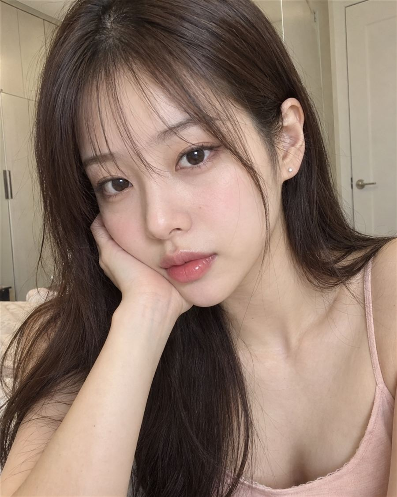
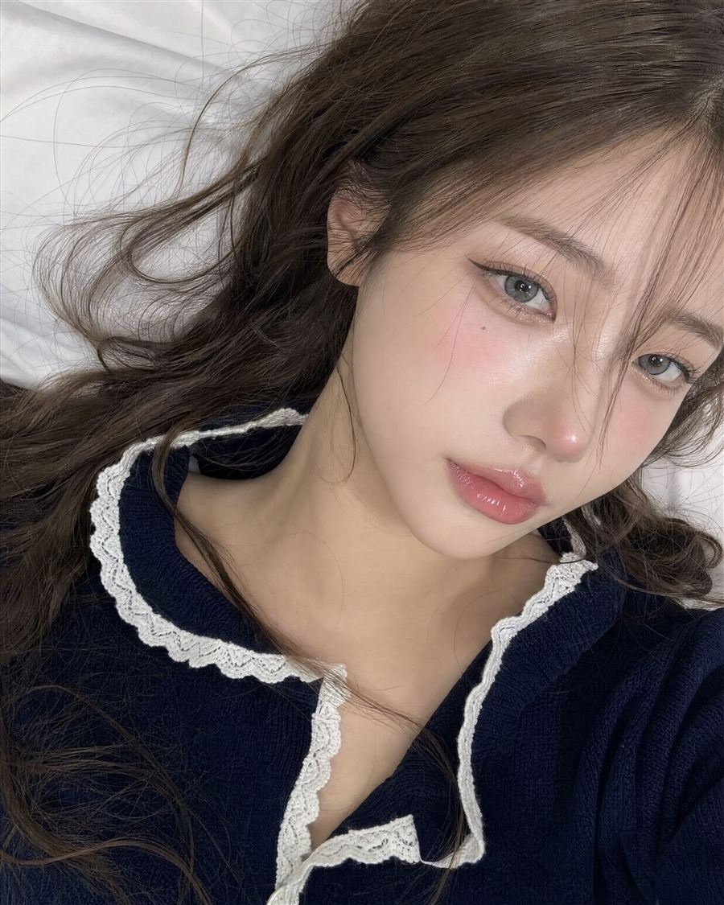
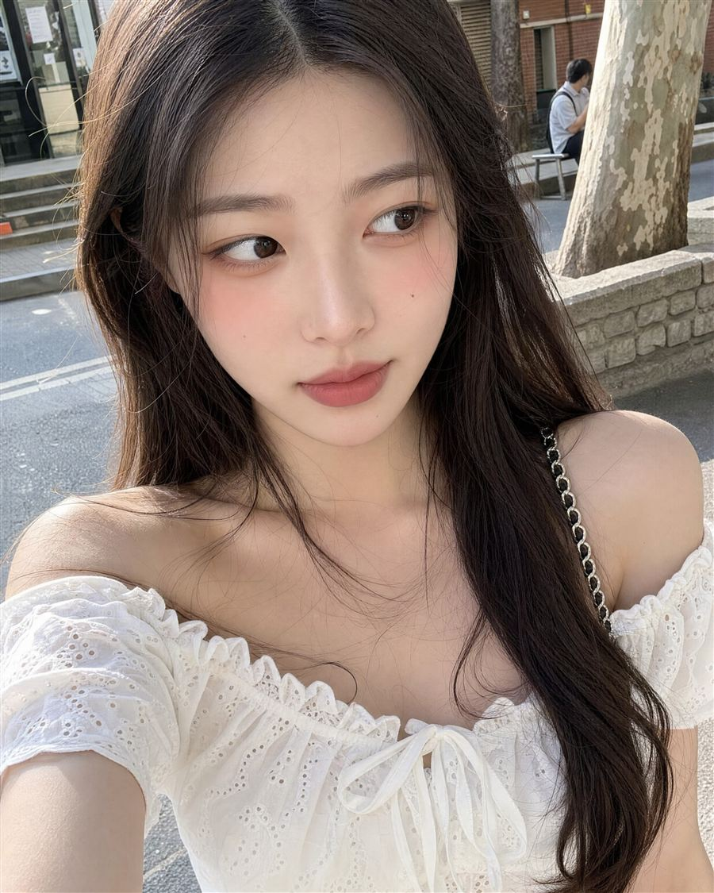
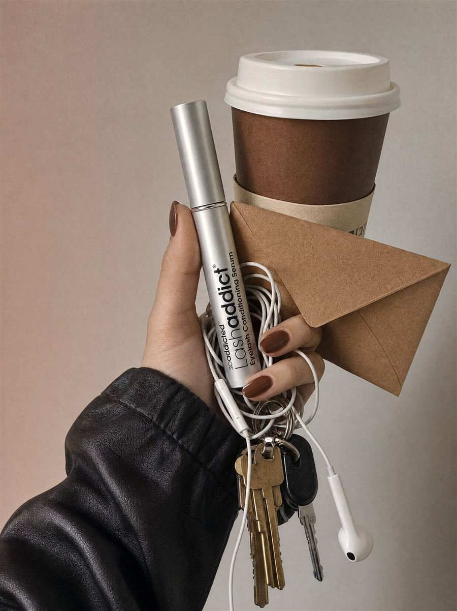
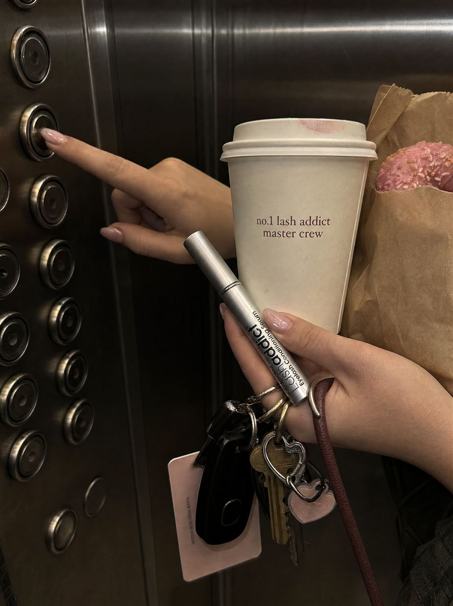
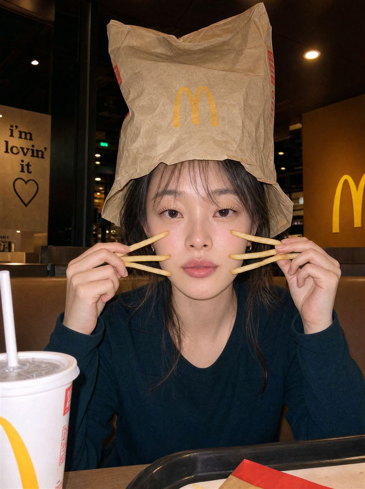
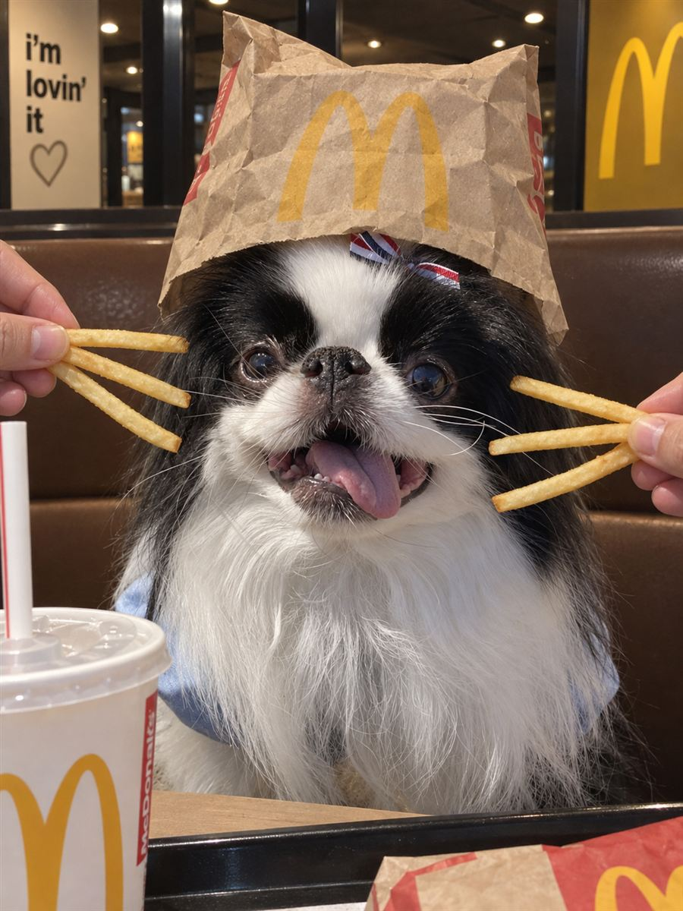

STEP 1
프롬프트 복사
복사해서 쓰시는 이미지 생성 AI에 붙여넣으면 됩니다.
좋은 프롬프트가 생기면 계속 추가할게요.

눌러서 크게 보기턱을 괴고 정면을 보는 실내 컷. 자연광의 부드러운 데일리 무드예요.
Close-up selfie of a young Korean woman indoors, shot at eye level, head tilted to one side and resting on the back of her hand, gazing directly at the camera with a calm, neutral expression. Long straight dark brown hair with wispy see-through bangs and thin face-framing strands, hair tucked behind one ear revealing small silver stud earrings. Pale, smooth glowing skin with soft pink blush, small straight nose, natural straight brows. Dark brown eyes with soft natural eye makeup. Full glossy lips in a pink tint. Wearing a light peach-pink thin-strap camisole top, bare shoulders and collarbone visible. Background: bright beige room with built-in wardrobe doors and a white door, slightly blurred. Soft diffused indoor daylight, warm tones, candid smartphone photo aesthetic, shallow depth of field, Korean natural makeup style, high resolution, realistic.

눌러서 크게 보기침대에 누워 위에서 내려다보는 앵글. 글로시 립과 렌즈 표현이 포인트예요.
Close-up selfie of a young East Asian woman lying on a white bed, shot from above at a slight diagonal angle, head tilted with face turned toward the camera. Long wavy brown hair spread loosely across the white bedsheet, wispy see-through bangs, a few strands falling across her face. Pale, glass-like dewy skin with soft pink blush concentrated on the cheeks and nose tip. Grey-blue colored contact lenses, large eyes with subtle aegyo-sal, natural brown eyeshadow, thin eyeliner, delicate lashes. Full glossy lips in a coral-pink tint with high-shine gloss. Wearing a dark navy knit cardigan with white lace scalloped trim on the collar and neckline. Soft, even indoor lighting, white bedding as background, slightly muted cool tones, smartphone photo aesthetic, shallow depth of field, Korean/Douyin makeup style, high resolution, realistic.

눌러서 크게 보기한낮의 거리에서 살짝 위에서 찍은 데일리 컷. 야외 자연광 톤이에요.
Close-up selfie of a young Korean woman outdoors on a city street in daylight, shot from a slightly high angle, face and upper body filling the frame, eyes glancing slightly to the side with a calm, neutral expression. Long dark brown hair with a middle part, soft waves falling over the shoulders, a few strands across the collarbone. Pale, smooth skin with warm peachy blush on the cheeks, straight natural brows, small nose, a tiny mole on the cheek. Dark brown eyes with soft natural eye makeup. Full lips in a muted rose-pink matte tint. Wearing a white off-shoulder eyelet lace blouse with scalloped trim and a small ribbon tie at the center, thin silver chain bag strap over one shoulder. Background: blurred street with a stone ledge, trees, a brick building, and a person sitting on a bench in the distance. Soft natural daylight, slightly overexposed highlights, warm tones, candid smartphone photo aesthetic, shallow depth of field, Korean natural makeup style, high resolution, realistic.

눌러서 크게 보기손에 커피컵·열쇠·이어폰과 함께 내 제품을 자연스럽게 들고 있는 연출 컷을 만듭니다. 핀터레스트 감성의 세로 3:4 구도예요.
사용법 — 이 프롬프트는 제품 사진을 함께 첨부해야 합니다. 이미지 생성 AI에 내 제품 사진을 올리고 "Sample Image"라고 알려준 뒤, 프롬프트를 붙여넣으세요. 제품은 원본 그대로 유지되고 주변 소품만 생성됩니다.
COMPOSITE-READY MASTER PROMPT — CHESTNUT-BROWN COLOR VERSION REFERENCE IMAGE INSTRUCTIONS Attach the sample image to this generation request and label it "Sample Image / Source Asset." Use the Sample Image as the sole source of truth for the featured product or object that must appear in the final image. Extract and preserve its recognizable silhouette, dimensions and proportions, material, surface finish, original colors, packaging structure, cap or lid shape, label layout, and distinctive non-text design features. Do not replace it with a generic lookalike, invent a different product, change its product category, recolor it, or redesign any part of it. Naturally composite the featured product/object from the Sample Image into the scene described below. It must be physically held by the hand, correctly occluded by fingers where they overlap, and matched to the scene's camera angle, scale, perspective, soft lighting, color grading, contact shadows, depth of field, and fine film grain. It must look photographed in the scene, never pasted on top. Preserve the source product's visible branding and label design only when shown clearly in the Sample Image. Avoid invented or garbled microtext; if tiny text cannot be reproduced faithfully, retain the source label's color blocks, spacing, and hierarchy while making microtext naturally soft and unreadable. COLOR-CHANGE PRIORITY: replace every newly generated green, olive, sage, moss, mint, or faded-green design element in the surrounding target scene with a restrained chestnut-brown / cocoa-brown equivalent. No green hue may remain in the coffee cup, nails, envelope, or generated color palette. The Sample Image product is the sole exception: preserve it exactly as supplied, including every original color, green area if present, packaging detail, logo placement, and label layout. Do not recolor, retouch, restyle, or color-grade the Sample Image product. Do not recolor white earphones, black leather, metallic keys, or the warm-gray background. The featured product/object from the Sample Image is the cosmetic hand-cream tube in this composition. Place it vertically near the center-left of the hand, immediately beside the coffee cup, gently tilted, with its black cap at the top if the source product has a black cap. If the Sample Image product has a different shape, cap, or color, retain those source characteristics exactly, with no recoloring. Preserve its placement, scale, hand-held integration, and full recognizability; do not hide it behind the other accessories. Create a highly realistic vertical 3:4 editorial lifestyle photograph, shot as an intimate, spontaneous fashion still-life snapshot. Scene and composition: a close-up of only one hand and forearm entering diagonally from the lower-left side of the frame; no face and no body are visible. The wrist is covered by the gathered cuff of an oversized black leather jacket with soft wrinkles, a subtle satin sheen, and realistic worn-leather texture. The hand is in the center-right of the frame, casually but securely carrying several everyday objects in one hand. The overall composition feels slightly messy, personal, stylish, and effortlessly curated rather than commercially staged. Hand details: a feminine hand with natural realistic proportions; relaxed fingers are partially curled around the objects. Use a soft pale-neutral skin tone. Fingernails are medium length and rounded almond-shaped, painted a uniform glossy chestnut-brown, deep cocoa-brown, or muted dark-caramel brown. All nails use the same solid single-color polish with no nail art, flowers, accents, patterns, contrasting color, or green undertone. Maintain correct anatomy: five fingers only, realistic knuckles and thumb position, and believable pressure and occlusion where the hand grips each item. Main object: a large chestnut-brown disposable takeaway coffee cup, upright in the upper-right center of the frame. The cup is matte paper in a muted cocoa / warm chestnut-brown finish, with a slightly lighter cream-colored cardboard sleeve around the middle. It has a thick matte-white plastic sip lid, viewed from slightly above so its elliptical rim and recessed drinking opening are visible. Add only small, minimal, partially obscured dark-brown or black sans-serif café-style lettering; it must be indistinct and unreadable. The cup looks full-sized, about 12-16 oz, and is the largest supporting object. Across the front center of the coffee cup, tuck a small unbranded brown kraft-paper letter envelope beneath the fingers. The envelope is rectangular, warm medium kraft brown, lightly creased, and has a clear triangular folded flap seam. It is held horizontally with a gentle natural bend, partially overlapping the cream cup sleeve without covering the whole cup. Use blank matte kraft paper: no address, stamp, handwriting, logo, printed text, currency pattern, or graphic design. It should add a warm casual stationery detail while remaining physically believable in the hand. Featured Sample Image product: use the exact product/object from the Sample Image in place of the usual cosmetic tube. Hold it vertically near the center-left of the carried objects, immediately to the left of the coffee cup and gently tilted. Preserve its original shape, packaging, material, cap/lid, colors, and design identity exactly as supplied. Do not recolor, restyle, redesign, simplify, or replace any visible part of this source product. Integrate it naturally into the hand-held arrangement only by matching the scene around it. Do not include a notebook, planner, book, or any rectangular paper item. Foreground accessories: a tangled white wired earphone cord drapes across the fingers and lower center of the frame. The cord is realistically thin, loosely knotted, and has small white earbuds and an inline microphone/control piece. The cable continues downward and exits the bottom edge of the image. Beneath the hand, add a metallic key ring with several dangling keys: two aged brass keys, one small silver key, a dark key fob, and a few tiny metal rings. The keys hang naturally below the hand, partly overlapping the white earphone cable, with realistic gravity and small reflective highlights. Background: a completely plain, softly lit indoor wall with a pale warm-gray background. The left side has an extremely subtle dusty-rose or muted warm-beige cast, blending softly into warm gray on the right. No furniture, room details, horizon line, or decorations. Leave generous clean negative space in the upper half and on the right side. Lighting and photographic style: soft diffuse daylight, as though photographed near a large window on an overcast day. Use very soft, almost invisible shadows and gentle low-contrast tonal transitions. Match the surrounding scene's illumination and shadow direction to the Sample Image product without changing the source product's original colors or design. Use a desaturated muted palette of chestnut brown, cocoa brown, dark caramel brown, cream white, charcoal black, taupe gray, warm kraft-paper brown, aged brass, and warm pale gray for all newly generated scene elements; retain the Sample Image product's original palette exactly. Apply a slightly cool-white balance with a faint dusty-rose cast in the background. The image has a natural smartphone/editorial film-scan aesthetic with subtle fine grain, gentle softness, realistic texture, modest dynamic range, no artificial HDR, no hard flash, and no dramatic studio lighting. Camera and framing: vertical portrait framing, 3:4 aspect ratio, approximately 736 x 981 pixels. Tight crop, photographed from slightly above and in front of the objects, similar to a 50 mm smartphone-equivalent lens. Use moderate depth of field: the hand, chestnut-brown coffee cup, Sample Image product, tangled cable, and keys are mostly in focus while the plain wall is smooth and softly blurred. The image should look like an authentic Pinterest-style minimalist fashion and daily-carry photograph, not a product advertisement. IMPORTANT CONSTRAINTS - The Sample Image product/object must be visibly present and naturally composited into the stated tube position; it is the priority subject. - Preserve the Sample Image product/object exactly as supplied: its recognizable form, materials, packaging, cap/lid, original colors, labels, and design details. Never recolor or redesign the Sample Image product, even if it contains green. - The coffee cup, nails, kraft-paper envelope, and all newly generated scene elements must be brown-based; do not add green, olive, sage, moss, mint, or teal to any newly generated element. - Preserve natural physical interaction: fingers grip the product, accessories overlap it plausibly, and all contact shadows, perspective, and scale are coherent. - No banknote, cash, currency, money, notebook, planner, book, paper pad, face, visible eyes, extra arms, extra hands, extra fingers, distorted anatomy, duplicate products, text overlay, captions, watermark, invented logos, writing or addresses on the envelope, unrealistic floating accessories, plastic-looking skin, cluttered room, or coffee spill. NEGATIVE PROMPT new green objects, sage-green coffee cup, olive-green coffee cup, moss-green coffee cup, mint-green coffee cup, green nail polish, green envelope, green banknote, green color cast on the generated scene, banknote, cash, money, currency, dollar bill, currency pattern, denomination, serial number, coin, printed envelope, addressed envelope, postage stamp, envelope logo, handwritten envelope, product replacement, generic substitute product, redesigned source packaging, recolored source product, altered source logo, altered source label layout, incorrect product color, changed cap shape, duplicated product, missing featured product, product pasted on top, sticker-like cutout, wrong scale, wrong perspective, mismatched light, mismatched shadows, hard-edged composite, halo around the product, floating product, hand covering the entire product, notebook, planner, book, paper pad, rectangular paper item, nail art, flower nail art, nail stickers, patterned nails, multicolored nails, contrasting nails, distorted hand, extra hand, extra arm, extra finger, malformed fingers, face, person, full body, visible eyes, illegible oversized typography, text overlay, watermark, caption, overly crisp invented label text, cluttered background, furniture, hard flash, harsh shadow, high contrast, dramatic studio light, glossy product advertisement, CGI, 3D render, illustration, cartoon, heavy HDR, oversharpening, coffee spill

눌러서 크게 보기마음에 드는 원본 사진의 소품 하나를 지우고, 그 자리에 내 제품을 자연스럽게 바꿔 넣습니다. 컵에 원하는 문구까지 새길 수 있어요.
사용법 — 사진 2장을 첨부합니다. Image 1 = 바꾸고 싶은 원본 사진, Image 2 = 내 제품 사진. 프롬프트 속 장면 묘사(엘리베이터·립밤·컵 문구)는 예시 기준이니, 내 원본 사진에 맞게 해당 부분을 고쳐 쓰세요.
TWO-IMAGE PRODUCT COMPOSITE — STRICT IMAGE ROLES Image 1 is the Layout Reference and Base Scene. Image 2 is the Sample Image / Source Asset. Edit Image 1 directly. Remove only the dusty-pink lip-balm tube positioned in the middle-left of Image 1, which lies diagonally between the extended pointing finger and the white coffee cup. Replace that one tube, and only that tube, with the exact product/object shown in Image 2. Use Image 2 as the sole source of truth for the inserted product. Preserve the Sample Image product exactly as supplied: its real silhouette, height-to-width ratio, thickness, geometry, packaging structure, cap or lid form, material, surface finish, original colors, gradients, logo placement, label layout, text hierarchy, visible product details, and distinctive non-text design features. Do not replace it with a generic lookalike. Do not recolor it, restyle it, simplify its packaging, change its cap shape, invent a new logo, or convert it into a generic pink lip balm. If the sample contains clearly visible branding or large readable text, retain its placement and overall appearance as faithfully as possible. Do not invent or enlarge tiny unreadable lettering; if exact microtext cannot be retained, keep the original label layout and make only the microtext naturally soft rather than garbled. NATURAL COMPOSITING REQUIREMENT Insert the exact Sample Image product at the former pink lip-balm position in Image 1. It must rest naturally in the space between the extended index finger on the left and the white coffee cup on the right, following the original tube's diagonal orientation: lower end near the center-bottom of the coffee cup area and upper end angled toward the upper-left. Match the product's displayed size to the original lip balm's visual footprint: compact, hand-sized, clearly visible, and secondary to the hands but still recognizable. If the Sample Image product is not tube-shaped, preserve its real authentic shape rather than forcing it into a tube; only adapt its scale and diagonal placement enough to fit naturally in the cleared central space. The Sample Image product must appear genuinely supported and lightly pinched by the visible fingers, with physically correct finger overlap and occlusion. The product must sit behind the pointing index finger where the finger crosses in front, while remaining in front of the background elevator wall. The nearby hand, coffee cup, brown paper bag, and key ring must retain believable edge separation from the product. Add subtle, soft contact shadows exactly where fingers touch the inserted product, and realistic narrow occlusion shadows beneath the product. Match Image 1's close-range perspective, slight depth of field, low-light elevator color grade, ambient reflections, camera grain, contrast, and sharpness. The result must look like one original candid photograph, never a cutout, sticker, pasted product, CGI render, or separate product photo. PRESERVE IMAGE 1 EXACTLY EXCEPT FOR THE REPLACED PRODUCT Keep the following Image 1 elements unchanged in identity, position, crop, scale, pose, material, color, and layout: - The vertical portrait composition and close candid lifestyle framing. - The brushed stainless-steel elevator interior, including dark reflective steel wall panels, vertical seams, warm metallic reflections, and the narrow elevator control panel along the far left edge. - The column of circular dark metallic elevator buttons on the left. Retain the upper visible button being pressed by the extended index finger; do not add, remove, duplicate, or illuminate buttons. - The feminine hands and forearms entering from the right. One index finger extends horizontally left to press the upper elevator button. The other hand and fingers casually secure the carried items near the center-right. Preserve the pale neutral skin tone, natural joints, realistic hand anatomy, and relaxed candid gesture. - The medium-length, rounded almond-shaped nails in glossy sheer pale pink / neutral nude polish. Keep every nail a clean solid color with no nail art, stickers, flowers, French tips, glitter, patterns, or accent colors. - The white takeaway coffee cup in the upper-center/right area, with a white plastic lid and a tiny soft pink lipstick-mark stain near the lid edge. Preserve its off-white paper texture, but remove all existing cup lettering completely. Replace it with the following exact two-line text, centered on the visible front of the cup in a small refined muted burgundy / dark wine-red serif typeface: Line 1 exactly: "no.1 lash addict" Line 2 exactly: "master crew" Render the wording with correct lowercase letters, spelling, period, spacing, and line break. Keep both lines crisp enough to read at normal viewing size, horizontally centered, modestly sized, and naturally printed on the paper cup. Do not retain the old wording. Do not add any other text, logo, slogan, characters, decorative mark, or oversized typography. - The large crumpled warm-brown kraft-paper bag along the right side, including natural paper folds, creases, torn/rustic top edge, and the pink-frosted doughnut partly visible from the top-right opening. Keep the doughnut pink and sprinkled, with its rounded bitten or partial visible shape. - The key ring dangling from the lower-center hand, including several aged brass keys, small silver keys, a dark glossy black car-key fob, metal rings, and a small muted-pink heart-shaped key charm. Preserve realistic gravity, overlap, and small metallic reflections. - The pale pink rectangular tag/card dangling below the keys. Preserve its size and placement but keep its small text subtle, partial, and naturally unreadable. - The thin dark rose-brown wrist strap/cable extending down vertically near the wrist and keys. Do not add or remove any major object other than the central pink lip-balm tube. Do not move the cup, bag, doughnut, keys, card, hands, fingers, elevator buttons, or wrist strap. Do not place the Sample Image product over the cup lettering, over the elevator button, or over the keys. SCENE AND COMPOSITION Create a highly photorealistic vertical 3:4 candid editorial lifestyle photograph inside a stainless-steel elevator. The camera is close to the subject at hand level, slightly in front of the carried objects, with a casual spontaneous snapshot feel. Crop tightly: no face, head, torso, or full body is visible. The left third contains the dark elevator button panel; the right half contains the two hands, coffee cup, kraft bag, and keys. The inserted Sample Image product occupies only the former central lip-balm position, creating the same diagonal visual bridge from the left-pointing finger toward the cup. The composition is intimate, feminine, slightly cluttered, personal, fashionable, and realistic—not a clean studio product advertisement. MATERIALS AND LIGHTING Use Image 1's existing indoor elevator lighting: dim, soft, low-contrast ambient light with cool gray-silver steel reflections and a faint warm cream/yellow tint around the cup and hands. The light is diffuse and modestly directional, creating gentle highlights on the nails, cup lid, black car fob, brass keys, and metallic elevator panels. Maintain soft, natural shadows between the fingers and held objects. The sample product must inherit this same lighting situation while retaining its source colors and packaging identity. Use realistic brushed-metal texture, matte kraft-paper folds, creamy paper cup texture, soft glossy plastic lid, natural skin texture, and subtle key reflections. PHOTOGRAPHIC STYLE Authentic smartphone fashion/editorial snapshot, early-2000s-inspired candid daily-carry aesthetic, subtle point-and-shoot flash ambience without harsh direct flash, slight natural sensor grain, subdued highlights, deep but detailed shadow areas, modest dynamic range, and slightly warm film-like color grading. Maintain realistic texture and imperfect everyday styling. Do not create a sterile e-commerce cutout or polished 3D commercial render. CAMERA AND FRAMING Vertical portrait, 3:4 aspect ratio, approximately 735 × 991 pixels. Tight crop and slight close-camera perspective comparable to a 35–50 mm smartphone-equivalent lens. The elevator buttons, fingers, inserted product, cup, kraft bag, and key ring are mostly in focus; distant wall reflections are subtly softer. Retain the original reference image's framing and relative object scale. NON-NEGOTIABLE CONSTRAINTS - Edit Image 1; do not generate a different scene. - Image 2 replaces only the central dusty-pink lip-balm tube in Image 1. - The Sample Image product is the priority subject and must be visibly present, fully recognizable, and preserved exactly in its source design and original colors. - Preserve every other major element of Image 1 in the same position, including the hands, cup, kraft bag, doughnut, elevator buttons, keys, dangling card, and wrist strap. - Apply realistic hand occlusion, perspective, scale, depth of field, ambient reflection, contact shadow, color temperature, and grain to make the insertion seamless. - No face, no full body, no new hands, no extra fingers, no duplicate objects, no additional cosmetics, no new bags, no extra cups, no additional keys, no text overlay, no watermark, and no scene redesign. The only permitted readable text in the scene is the exact two-line coffee-cup print: "no.1 lash addict" and "master crew."

눌러서 크게 보기종이봉투 모자에 감자튀김 수염까지. 내 셀카를 첨부하면 얼굴과 옷은 그대로 살리고 매장 컷으로 바꿔줍니다.
사용법 — 내 셀카 1장을 첨부하고 프롬프트를 붙여넣으세요. 셀카가 얼굴과 옷의 기준이 됩니다.
Create a photorealistic photograph of me using my uploaded selfie as the primary reference for both my facial identity and my clothing. Place me in the restaurant scene described below. Preserve my recognizable facial structure, face shape, eye shape and spacing, nose, lips, jawline, natural skin tone, apparent age, and distinctive facial details. Retain natural facial asymmetry and realistic skin texture. Apply the new expression and lighting without reshaping my features. If a separate restaurant reference image is attached, use it for composition, pose, hairstyle, props, background, and lighting. My selfie takes priority for my identity and outfit. Recreate the outfit visible in my selfie. Match its actual colors, neckline, collar shape, sleeve length, silhouette, fit, fabric texture, patterns, visible graphics, buttons, seams, and layering wherever these details are discernible. Preserve the clothing's original coverage and the arrangement of any visible layers. Adapt the fabric folds, sleeve position, and drape naturally to a seated pose with both hands raised beside my cheeks. Keep the garment colors recognizable under the new lighting. If my selfie shows only part of the outfit, extend the visible garments consistently using the available details, keeping unseen areas simple and plausible. Do not substitute the outfit worn by the person in the restaurant reference. The final image should look as though another person photographed me from across a restaurant table. Use a vertical 3:4 composition, closely framed from the top of a paper bag worn on my head to my lower chest and the near edge of the table. Seat me centrally in a McDonald's booth. The paper bag nearly touches the upper edge of the frame, my face occupies the central upper portion, and my raised forearms fill the lower left and right sides. Keep the camera close to eye level, with natural perspective and minimal wide-angle distortion. My torso and face are almost directly forward, my shoulders relaxed, and my chin subtly lowered. My eyes look just beside the camera. My lips are softly pursed and very slightly parted, without visible teeth. Keep the expression almost neutral, with an understated playfulness created by the props. Preserve my own facial characteristics when translating this expression. Raise both hands beside my cheeks. Each hand holds exactly three thin, golden French fries, making six fries in total. The hands sit outside the cheeks, with the fingers lightly pinching the outer ends of the fries. The free ends point inward toward the face. On each side, spread the three fries into a small fan: one angles toward the upper cheek, one points toward the middle of the cheek, and one angles toward the area beside the mouth. Together, they resemble three cat whiskers on each cheek. Keep the arrangement slightly imperfect and natural. Show realistic potato texture, lightly browned edges, subtle bends, and small variations in thickness. The fries are held beside the skin rather than inserted into the mouth. Render anatomically correct fingers, a believable grip, and clear separation between the hands, fries, and face. Any sleeves or cuffs visible beside the hands must belong to the outfit from my selfie. Place a large, crumpled McDonald's paper takeaway bag upside down over the crown of my head like an improvised hat. The bag is muted beige-brown kraft paper with a slightly gray cast, visible wrinkles, creases, and folded edges. A yellow McDonald's M logo sits near the center of its front face, with narrow areas of red printing visible along the sides. The bag's upper left and right corners rise into uneven points while the middle of the top edge dips downward, loosely suggesting cat ears. Preserve the irregular shape of an actual crushed paper bag. Its open lower edge folds around the top of my hair, with loose side flaps extending toward the temples. Include realistic paper thickness, contact shadows, and compressed folds where the bag rests on my head. Style the hair to match the restaurant scene: dark brown to near-black hair loosely gathered behind the head, with some volume around the sides. Fine, separated, wispy bangs fall across the forehead, leaving skin visible between strands. Loose strands frame the face, and a few longer pieces fall beside the neck toward the upper chest. Keep the hair slightly tousled and gently compressed beneath the paper bag while preserving my recognizable facial outline. Use subtle makeup adapted to my face: a soft rosy flush across the cheeks and lightly over the nose, restrained eye definition, and muted pink lips with a little natural shine. Preserve my underlying skin tone. Keep believable skin texture and gentle tonal variation. Recreate a warmly lit McDonald's interior behind me. Use dark brown and black structural elements, brown booth seating, and a low partition behind the shoulders. On the left and near the center of the background, include dark vertical columns and reflective glass surfaces showing a deeper restaurant interior. The ceiling is dark, with several small circular recessed lights glowing warm white. On the right, show a mustard-yellow wall panel with a large yellow McDonald's M logo, partially cropped by the right edge. On the far left, include a light-colored panel with the words "i'm lovin' it" stacked over several lines and a simple black outlined heart beneath them. Keep the background recognizable, with only modest softness. Along the bottom edge, show the rim of a black plastic serving tray crossing the foreground at a slight diagonal. Include a partially visible red-and-brown paper food wrapper toward the lower right. In the lower-left foreground, place a large white McDonald's drink cup, partly cut off by the left and bottom edges. The cup has a yellow M logo, a narrow area of red printing, a translucent plastic lid, and a white straw extending upward near the left border. Light the scene like a casual photograph taken with a direct on-camera flash. My face, hands, and the front of my outfit are brightly illuminated, while the restaurant behind me remains darker. Add small, realistic highlights on the nose, cheeks, lips, and fingers. Render the clothing's response to the flash according to its actual material and color in my selfie. Keep the foreground light relatively neutral and the background lighting warm yellow-brown. Include short, believable shadows beneath the bangs, around the chin, between the fingers, and beneath the paper folds. The overall finish should resemble an informal compact digital camera snapshot: direct flash, slightly subdued colors, mild digital grain, gentle image softness, and restrained sharpening. Keep my face clearly recognizable and my outfit's defining details visible. Preserve the spontaneous atmosphere of someone playing with food packaging during a meal. Prioritize my facial identity and clothing from the selfie, followed by the close vertical composition, six French fries arranged as cheek whiskers, the paper bag's shape and placement, the pose and expression, and the restaurant background. Avoid identity blending, excessive facial beautification, altered skin tone, wardrobe replacement, invented garment patterns, changed necklines, extra or fused fingers, additional fries, floating props, fries merging with skin, a bag covering the eyes, a visible phone, a selfie-taking pose, heavy background blur, cinematic color grading, studio glamour lighting, illustration, CGI, added captions, or watermarks.

눌러서 크게 보기우리 강아지·고양이도 같은 컷으로. 도우미 손이 감자튀김 수염을 들어주는 버전이에요.
사용법 — 반려동물 사진 1장을 첨부하고 프롬프트를 붙여넣으세요. 털 무늬와 액세서리(목줄·리본)까지 그대로 살립니다.
Create a photorealistic photograph of the animal in my uploaded photo, placing that same animal in the McDonald's restaurant scene described below. Use the uploaded animal photo as the primary reference for the animal's individual identity, anatomy, natural appearance, and any visible clothing or accessories. If a separate restaurant reference image is provided, use it only for composition, props, background, and lighting. Preserve the animal's recognizable head shape, eye shape and spacing, eye color, muzzle or beak shape, nose, ears, facial proportions, apparent age, and distinctive details. Retain natural asymmetry and the exact placement of visible markings. The finished animal should clearly resemble the specific animal in my photo, rather than a generic animal of the same species. Preserve the original coat color, fur length, texture, density, and direction of growth. Match patches, stripes, spots, facial markings, whiskers, and other identifiable details wherever visible. For animals with feathers, scales, or exposed skin, preserve their corresponding colors, patterns, and textures. Do not replace the animal's natural appearance with human facial features, human hair, bangs, or makeup. If the uploaded photo shows clothing, a collar, a harness, a bandana, or other accessories, recreate those visible items faithfully. Match their colors, shape, material, patterns, graphics, fasteners, fit, and coverage. Adapt their folds and positioning naturally to the new pose. If the animal is not wearing clothing or accessories, leave it that way. Extend any partially visible areas conservatively and consistently with the reference. The final image should look as though someone photographed the animal from across a restaurant table. Use a vertical 3:4 composition, closely framed from the top of a paper bag worn on the animal's head to its lower chest or corresponding upper-body area and the near edge of the table. Position the animal centrally in a brown McDonald's booth. Use a seated or resting posture that is physically plausible for its species. Adjust the camera position and framing to the animal's natural size and proportions. Do not stretch its torso, lengthen its neck, or give it human shoulders to fit the composition. The paper bag nearly touches the upper edge of the frame. The animal's face occupies the central upper portion. Keep the camera close to the animal's eye level, with natural perspective and minimal wide-angle distortion. The result should feel like a casually taken, tightly framed restaurant snapshot. Keep the animal's head almost directly forward where anatomically appropriate, with a relaxed posture and its gaze directed just beside the camera. Preserve its natural eye placement and facial structure. Use a calm, attentive expression with a naturally resting mouth or beak. Avoid a forced human smile, pursed human lips, or exaggerated cartoon expressions. The playful atmosphere should come from the props. Arrange exactly six thin, golden French fries beside the animal's face: three on each side, resembling oversized cat whiskers. An off-camera helper holds the fries. One human hand enters from the left edge and another from the right edge, each holding exactly three fries. Show enough of each wrist or forearm entering from the frame edge to make the support physically clear. These hands belong to the helper and must remain visibly separate from the animal's body. Keep the helper's face and torso outside the frame. Each hand lightly pinches the outer ends of its three fries. The free ends point inward toward the animal's face. On each side, spread the three fries into a small fan: one angles toward the upper cheek area, one points toward the middle of the cheek, and one angles toward the area beside the mouth or corresponding facial region. Keep all six fries individually distinguishable. Make the arrangement slightly imperfect and natural, with realistic potato texture, lightly browned edges, subtle bends, and small variations in thickness. Position them beside the fur or skin without inserting them into the mouth, attaching them to the face, or merging them with natural whiskers. Render anatomically correct human fingers and believable contact with the fries. Keep the animal's own paws, wings, or other limbs in a natural position appropriate to its species. Do not transform animal limbs into human hands or add opposable thumbs. Place a large, crumpled McDonald's paper takeaway bag upside down over the crown of the animal's head like an improvised hat. Scale it plausibly to the animal while preserving the appearance of a real paper bag. Use muted beige-brown kraft paper with a slightly gray cast, visible wrinkles, creases, and folded edges. A yellow McDonald's M logo sits near the center of the front face, with narrow areas of red printing visible along the sides. The upper left and right corners rise into uneven points while the middle of the top edge dips downward, loosely suggesting cat ears. Preserve the irregular shape of an actual crushed bag. These paper points must remain distinct from the animal's real ears. Fit the open lower edge naturally around the crown, with loose side flaps and realistic contact shadows. Accommodate the animal's actual ear shape and placement without deforming its anatomy. Allow the ears to remain visible beside or behind the bag where physically plausible. Keep the eyes and the identifying features of the face unobstructed. Show realistic paper thickness and compressed folds where the bag rests on the head. Fur or feathers may be gently compressed at contact points, but retain their original texture and coloration. Recreate a warmly lit McDonald's interior behind the animal. Use dark brown and black structural elements, brown booth seating, and a low partition behind its upper body. On the left and near the center of the background, include dark vertical columns and reflective glass surfaces showing a deeper restaurant interior. The ceiling is dark, with several small circular recessed lights glowing warm white. On the right, show a mustard-yellow wall panel with a large yellow McDonald's M logo, partially cropped by the right edge of the photograph. On the far left, include a light-colored panel with the words "i'm lovin' it" stacked over several lines and a simple black outlined heart beneath them. Keep the background recognizable, with only modest softness. Along the bottom edge, show the rim of a black plastic serving tray crossing the foreground at a slight diagonal. Include a partially visible red-and-brown paper food wrapper toward the lower right. In the lower-left foreground, place a large white McDonald's drink cup, partly cut off by the left and bottom edges. The cup has a yellow M logo, a narrow area of red printing, a translucent plastic lid, and a white straw extending upward near the left border. Keep the props at believable relative sizes and distances. Light the scene like a casual photograph taken with a direct on-camera flash. Brightly illuminate the animal's face, the front of its body, any clothing, and the helper's hands. Keep the restaurant behind them noticeably darker. Render the flash according to the actual surface: fine highlights on fur or feathers, subtle reflections on scales, natural eye catchlights, and appropriate highlights on the nose where applicable. Preserve the animal's true colors and coat markings. Avoid glowing eyes, excessive reflections, or clipped highlights that erase detail. Keep the foreground light relatively neutral and the background lighting warm yellow-brown. Include short, believable shadows beneath the muzzle or beak, between the helper's fingers, and beneath the paper folds. The overall finish should resemble an informal compact digital camera snapshot: direct flash, slightly subdued colors, mild digital grain, gentle image softness, and restrained sharpening. Keep the animal clearly recognizable and its distinctive coat markings and accessories visible. Preserve the spontaneous atmosphere of a staged, playful restaurant photograph. Prioritize, in order: the animal's individual identity and natural anatomy; its original coat markings and any clothing or accessories; the close vertical composition; exactly six fries arranged as facial whiskers; the paper bag's shape and placement; the relaxed expression and pose; and the restaurant background. Avoid blending different animals, changing species, generic replacement features, altered coat colors, missing or invented markings, human facial features, human hair, makeup, wardrobe replacement, invented accessories, human-shaped animal limbs, extra limbs, extra or fused fingers, additional fries, floating props, fries merging with fur or skin, a bag covering the eyes, distorted ears, a visible phone, a selfie-taking pose, heavy background blur, cinematic color grading, studio glamour lighting, illustration, CGI, added captions, or watermarks.
예시 이미지는 모두 AI로 생성한 가상 인물입니다. 프롬프트는 자유롭게 사용하시면 됩니다.
프롬프트를 붙여넣는 것과
내 고객 사진에 쓰는 것은 다릅니다
내 작업물은 그대로 두고 얼굴만 바꾸는 방법은 AI 마케팅 클래스에서 배워요.
수업이 끝나면 게시 가능한 콘텐츠를 최소 5개 완성해서 가져갑니다.
프롬프트 관련 질문은 부담 없이 카카오톡으로 남겨주세요.
카카오톡으로 문의하기